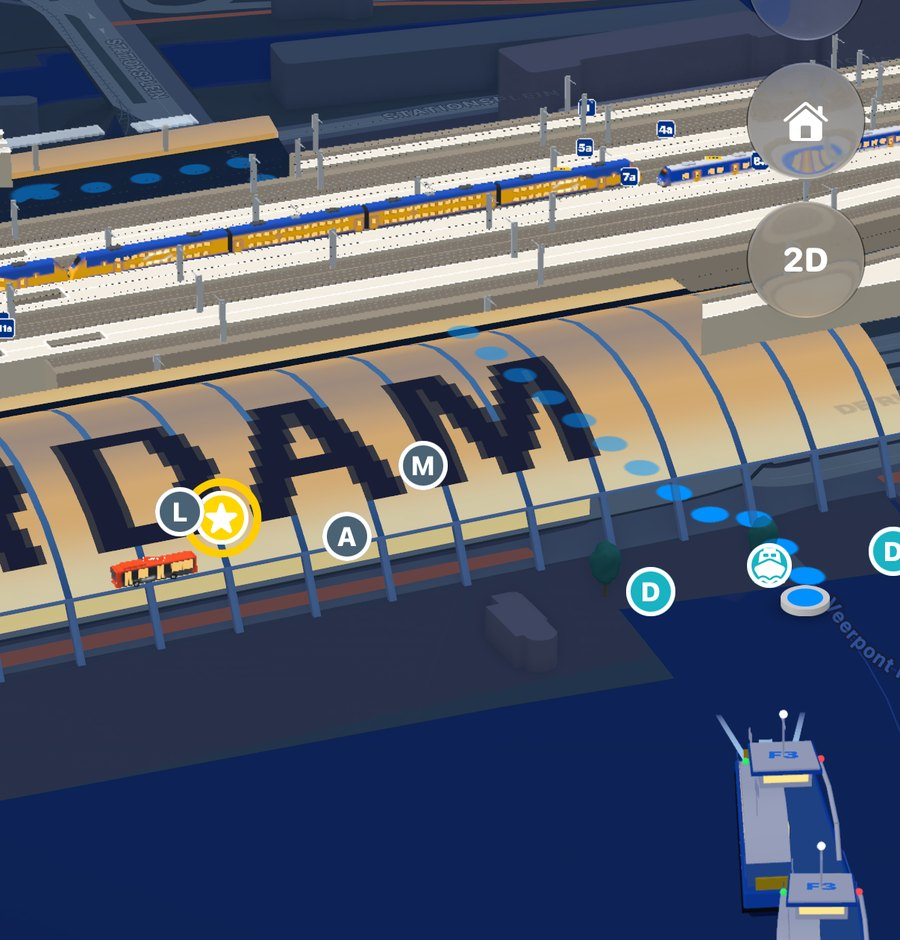
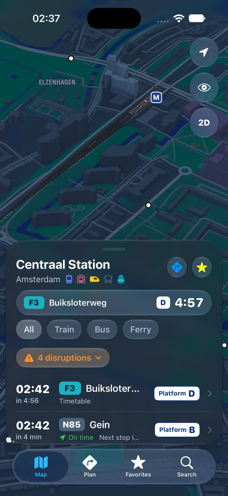
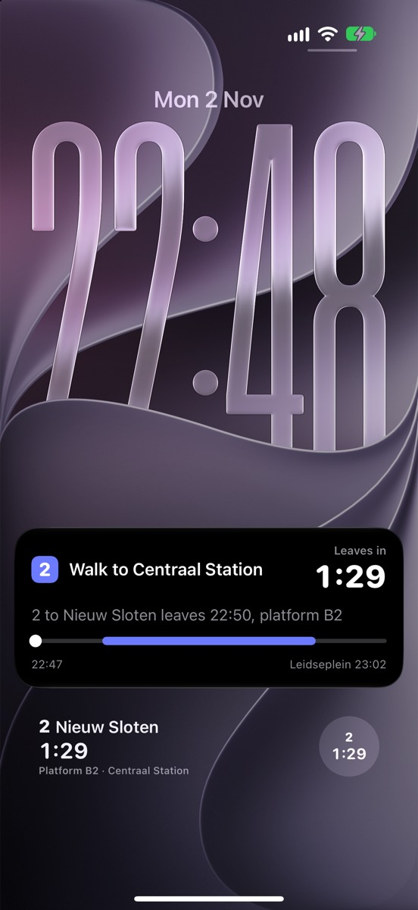
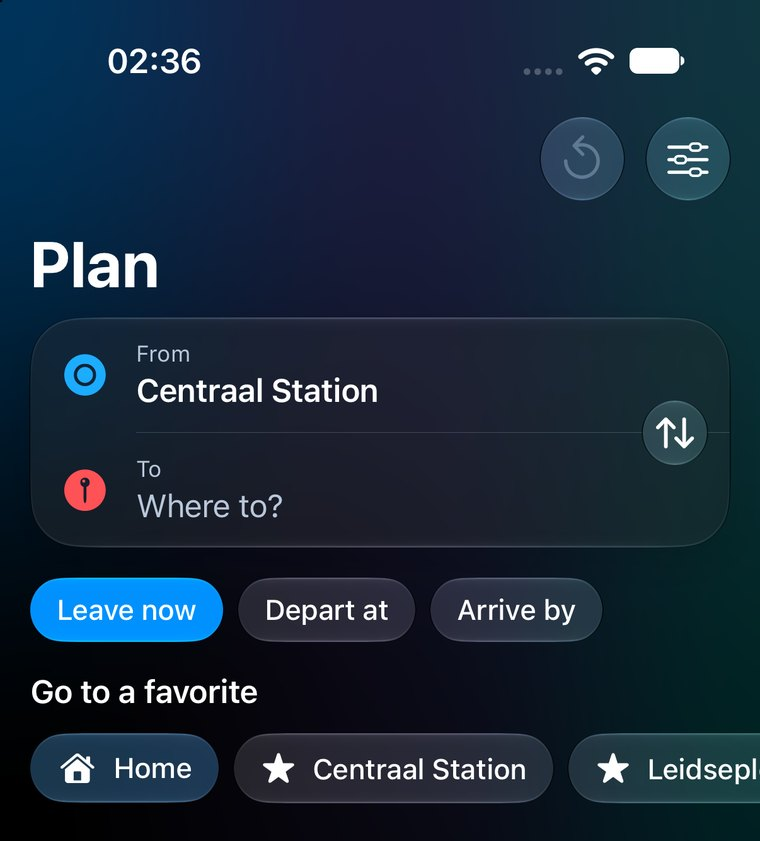
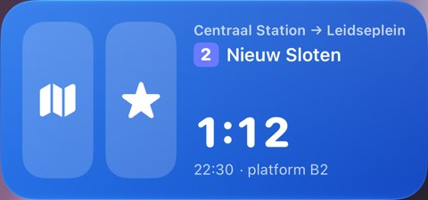

Jouw rit,
nu.
Elke bus, tram, metro, trein en pont in Nederland, live op je iPhone. Je ziet wat nu vertrekt en waar het is.
Meld je aan voor de bètaDe Sprinter, nu
liveVertrekt over
–:––- Naar Hoofddorp
- Spoor

Waar is hij?
Elke bus, tram, metro, trein en pont live op de kaart. Tik op een lijn en je ziet alleen die.
Hoe lang nog?
Bovenaan staat wat het eerst vertrekt, met het perron of de steiger en de tijd die je nog hebt.

Amsterdam in 3D
In Amsterdam staan stations, metro's, trams en ponten in 3D op de kaart. Je ziet ze aankomen en weer vertrekken.
Onderweg
Druk op Go en je reis loopt mee op je toegangsscherm: wanneer je vertrekt en waar je overstapt, zonder je telefoon te openen.


Of gewoon naar huis
Plan je reis, of tik op Thuis. Ook met Siri of via het Bedieningspaneel.

Je vaste route
Alle trams, metro's, bussen, treinen of ponten in één lijst. Ook als widget.
Zonder rommel
Geen account nodig. Je locatie gebruiken we alleen om haltes en routes te vinden, en we bewaren hem nergens. Je favorieten staan op je iPhone.